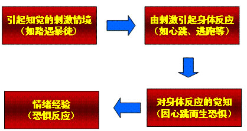
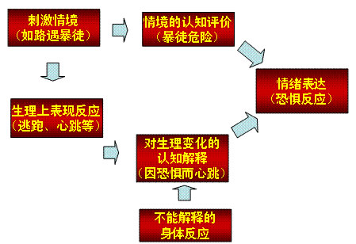

00:00
第二单元 情绪和情感的分类
一、情绪状态的分类
1．心境（mood）是指微弱而持久、带有渲染性的情绪状态。
2．激情（intense emotion）是一种迅猛爆发、激动短暂的情绪状态。
3．应激（stress）当人们遇到某种外危险或面临某种突然事变时，身心处于高度紧张状态，即为应激状态。
二、情感的分类
1．道德感（moral feeling） 是在评价人的思想、意图和行为是否符合道德标准时产生的情感。
2．理智感（rational feeling） 是在认识和评价事物过程中所产生的情感。
3．美感（aesthetic feeling） 是根据一定的审美标准评价事物时所产生的情感。
第三单元 情绪的理论（难点）
一、詹姆士-兰格的情绪外周学说
观点：情绪刺激引起身体的生理反应，而生理反应进一步导致情绪体验的产生。
1.詹姆斯：情绪就是对身体变化的知觉。
14:30

二、坎农-巴德的情绪丘脑学说
观点：情绪的中心不在外周神经系统，而在中枢神经系统的丘脑。
情绪体验和生理变化是同时发生的，它们都受到丘脑的控制。
25:08
三、阿诺德的评定-兴奋学说
观点：
1.从刺激出现到情绪的产生，要经过估量和评价，情绪产生是刺激“情景——评估——情绪”的过程。
2.情绪的产生是大脑皮层和皮层下组织协同活动的结果，皮层兴奋是最重要的条件。
四、沙赫特-辛格的情绪三因素学说
观点：
对于特定情绪而言，有两个必要因素：一是个体必须体验到高度的生理唤醒，如心率加快；二是个体必须对生理状态的变化进行认知性的唤醒。
